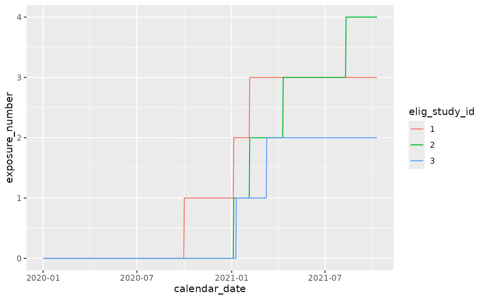

Cumulative counting seroconversion episodes per individual
cg_annotate_exposures_count.Rdcg_annotate_exposures_count returns a cumulative
count of exposures. These exposures can be vaccines, infection
episodes, or seroconversion episodes (a seroconversion episode is
biologically an infection - the difference between the two is
concomittant symptoms, or diagnostic testing).
Usage
cg_annotate_exposures_count(
cg,
episode_number = episode_number,
N_seroconversion_episode_number = N_seroconversion_episode_number,
dose_number = dose_number,
exposure_number = exposure_number
)Arguments
- cg
a chronogram
- episode_number
the column containing infection episode numbers.
cg_annotate_episodes_find()Default is episode_number.- N_seroconversion_episode_number
the column name for resulting episode flag. Generated by
cg_annotate_episodes_find_seroconversion(). Default is "N_seroconversion_episode_number".- dose_number
the column name for cumulative doses. Generated by
cg_annotate_vaccines_count(). Default is "dose_number".- exposure_number
the column name to return the cumulative counter. Default is "exposure_number".
Examples
library(dplyr)
library(ggplot2)
data("built_smallstudy")
cg <- built_smallstudy$chronogram
## add infections to chronogram ##
cg <- cg_add_experiment(
cg,
built_smallstudy$infections_to_add
)
## annotate infections ##
cg <- cg_annotate_episodes_find(
cg,
infection_cols = c("LFT", "PCR", "symptoms"),
infection_present = c("pos", "Post", "^severe")
)
#> Parsed: infection_cols and infection_present
#>
#> Searching in the [[column]], for the "text":
#>
#> stringr::str_detect(.data[["LFT"]], "pos") ~ "yes"
#>
#> stringr::str_detect(.data[["PCR"]], "Post") ~ "yes"
#>
#> stringr::str_detect(.data[["symptoms"]], "^severe") ~ "yes"
#>
#>
#> ...detecting will be exact.
#> Capitals, spelling etc must be precise
#>
#> Joining with `by = join_by(calendar_date, elig_study_id)`
## annotate vaccines ##
cg <- cg %>% cg_annotate_vaccines_count(
## the prefix to the dose columns: ##
dose = dose,
## the output column name: ##
dose_counter = dose_number,
## the prefix to the date columns: ##
vaccine_date_stem = date_dose,
## use 14d to 'star' after a dose ##
intermediate_days = 14)
#> Using stem: date_dose
#> Found vaccine dates
#> date_dose_1
#>
#> date_dose_2
## annotate exposures ##
cg <- cg %>% cg_annotate_exposures_count(
episode_number = episode_number,
dose_number = dose_number,
## we have not considered episodes of seroconversion
N_seroconversion_episode_number = NULL
)
## Visualise
cg %>% ggplot(
aes(x=calendar_date,
y= exposure_number,
col = elig_study_id)) + geom_line()
